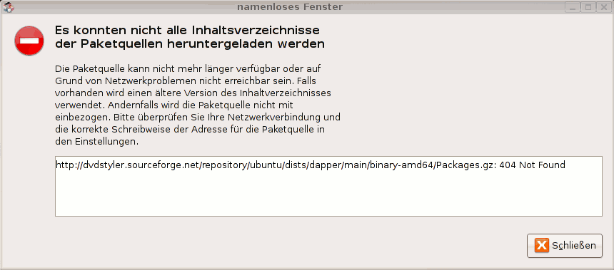
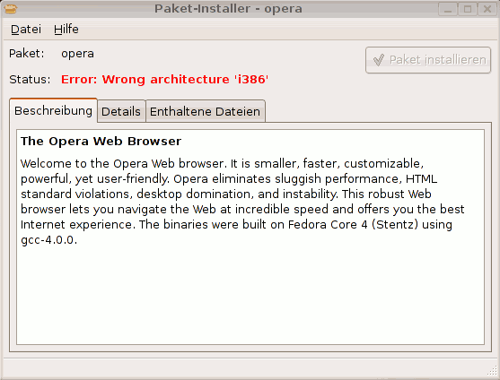

64-Bit-Architektur
Dieser Artikel wurde für die folgenden Ubuntu-Versionen getestet:
Dieser Artikel ist größtenteils für alle Ubuntu-Versionen gültig.
Zum Verständnis dieses Artikels sind folgende Seiten hilfreich:
Was heißt 64 Bit?¶
Viele frischgebackene Besitzer eines Rechners mit 64-Bit-CPU haben bisher nur eine grobe Vorstellung, was "64 Bit" eigentlich bedeutet. Meist wird 64 Bit = 2 * 32 Bit gleichgesetzt. Dass dies nicht (immer) stimmt, macht ein einfaches Beispiel deutlich: Auch wenn die Autobahn doppelt so breit ist, wird ein PKW trotzdem nicht schneller und kommt nicht früher ins Ziel.
Denn genau das heißt 64 Bit: der Prozessor bietet "breitere" Wege für die interne Datenübertragung. Ob ein Lastwagen (Programm) damit nun mehr Ware (mehr Daten/Leistung) in der gleichen Zeit transportieren kann, hängt davon ab, ob er den breiteren Weg (64 statt 32 Bit) auch zusätzlich nutzen kann.
Konkret heißt das für Computerprogramme: nur wenn man seine Daten nicht in 32-Bit, sondern auch in 64-Bit-Häppchen aufteilen kann, dann können auf einmal (d.h. in einem Taktzyklus) doppelt so viele Daten transportiert (bzw. damit gerechnet) werden wie vorher. Insofern gilt hier die theoretisch richtige Formel 64 Bit = 2 * 32 Bit, also doppelt so schnell. In der Realität muss aber auch mal ein kleiner Laster mit ein paar Kisten Äpfeln über die Autobahn, d.h. die Autobahn wird nicht in voller Breite ausgenutzt und damit nur ein Teil der 64 Bit geliefert - der Laster transportiert die gleiche Menge in der gleichen Zeit auf beiden Autobahnen (32 und 64 Bit). In diesen Fällen bringt 64 Bit keinen Vorteil. Zusätzlich zur Steigerung der Geschwindigkeit bietet 64 Bit aber auch einen größeren Adressraum, d.h. es kann statt 232 = 4 GiB nun 264 = 16 Milliarden GiB = 16 EiB (ExbiByte) Speicher adressiert werden (Merke: jedes zusätzliche Bit verdoppelt den Adressraum!). Aktuell nutzen die Prozessoren jedoch "nur" 248 = 256 TebiByte.
64 Bit bietet somit theoretisch die doppelte Leistung von 32 Bit. Dazu müssen aber alle Programme auf 64 Bit optimiert sein, und selbst dann wird es nie zu einer Verdopplung der Leistung kommen, da z.B. 2 * 2 auch in 64 Bit nicht schneller gerechnet wird (siehe Apfel-LKW). Es kommt somit auf die Programme (Fahrzeuge) an, wie gut sie die 64 Bit (doppelt so breite Straße) ausnutzen. Besonders rechenintensive Programme aus den Bereichen Fraktalberechnung, Raytracing  , BOINC etc., deren Hauptaufgabe die Berechnung mathematischer (physikalischer) Modelle ist, könnten in einer entsprechend optimierten 64-Bit-Variante praktisch doppelt so schnell werden. Jedoch arbeitet die Intel-Gleitkommaeinheit (x87-FPU bzw. SSE) in einem 64-Bit-OS nicht schneller als unter 32-Bit (selbe CPU und gleiche Variablenbreite). Für andere Programme im Büroalltag (E-Mail, Browser, Textverarbeitung etc.) liegt der Leistungszuwachs irgendwo zwischen 0 und 100%.
, BOINC etc., deren Hauptaufgabe die Berechnung mathematischer (physikalischer) Modelle ist, könnten in einer entsprechend optimierten 64-Bit-Variante praktisch doppelt so schnell werden. Jedoch arbeitet die Intel-Gleitkommaeinheit (x87-FPU bzw. SSE) in einem 64-Bit-OS nicht schneller als unter 32-Bit (selbe CPU und gleiche Variablenbreite). Für andere Programme im Büroalltag (E-Mail, Browser, Textverarbeitung etc.) liegt der Leistungszuwachs irgendwo zwischen 0 und 100%.
Wer sollte Ubuntu 64-bit installieren?¶
Früher gab es viele Programme, die nicht in einer 64-Bit-Version zur Verfügung standen, so dass die Arbeit mit dem Betriebssystem nur eingeschränkt möglich war. Es gibt zwar, wie unten zu sehen, auch Möglichkeiten, 32-Bit-Programme in einem 64-Bit-System auszuführen, aber nicht immer führt dieser Weg zum gewünschten Ziel. In den letzten Jahren hat sich aber einiges getan, so dass man heute kaum noch Abstriche machen muss, wenn man ein 64-Bit-System installiert.
Zusätzlich ist ab einer Grenze von ca. 3-3,5 GB RAM eine 64-Bit Version auch deswegen interessant, da ein 32-Bit-Prozessor ohne zusätzlichen Aufwand und Tricks nicht mehr Speicher adressieren kann. Es gibt zwar bei x86-Prozessoren eine Abhilfe namens PAE (Physical Adress Extension), welche darauf abzielt, den Speicherplatz bis 4 GB darüber wieder "anzukleben" (Memory Remapping), was jedoch nicht immer reibungslos funktioniert (siehe c't 2008/08, S. 112 ff.  ). Außerdem stehen Prozessen maximal jeweils 3 GB virtueller Speicher zur Verfügung.
). Außerdem stehen Prozessen maximal jeweils 3 GB virtueller Speicher zur Verfügung.

Ubuntu 64-Bit-Version¶
Schon seit Version 5.10 (Breezy Badger) bietet Canonical eine 64-Bit-Variante von Ubuntu für PCs zum Download an. Diese funktioniert auf allen 64-Bit-Prozessoren mit AMD64- oder Intel 64-Architektur. Das sind von AMD alle Prozessoren, deren Name wie folgt beginnt:
Athlon 64
Athlon II
Opteron
Turion 64
Phenom
Sempron*
und bei Intel:
Core i
Core 2 Duo
Xeon*
Pentium 4/D/dual-core*
Atom*
Celeron*
* Diese Prozessoren sind nicht immer 64-Bit-fähig
Um herauszufinden, ob die CPU 64-Bit beherrscht, kann man in einem Terminal den Befehl lscpu ausführen:
lscpu | grep -i op
Lautet die Ausgabe
32-bit, 64-bit
ist der Prozessor 64-Bit-fähig. Natürlich kann auf 64-Bit-fähigen Rechnern auch die herkömmliche 32-Bit-Version von Ubuntu installiert werden. Dann läuft der Rechner im "32-Bit-Modus" - sowohl der Linux-Kernel als auch alle Softwarekomponenten (Programme, Bibliotheken etc.) werden dann in einer 32-Bit-Version installiert. 64-Bit-Programme funktionieren damit nicht.
Installation¶
Die Installation ist völlig identisch zur 32-Bit-Version, d.h. man lädt sich die passende CD herunter bzw. installiert einfach von der CD mit der Aufschrift "... for your 64-bit PC". Alles weitere sieht genauso aus wie bei der 32-Bit-Version.
So werden auch nachträglich Programme installiert, ohne spezielle Angaben für 64-Bit zu machen: Die Installationsprogramme (z.B. Synaptic oder apt-get) suchen automatisch nach der 64-Bit-Version des zu installierenden Paketes. Wenn dieses nicht vorhanden ist, wird eine entsprechende Fehlermeldung ausgegeben.

Hier sieht man, dass automatisch die 64-Bit-Version gesucht wurde (Unterverzeichnis binary-amd64), aber die Quelle keine 64-Bit-Versionen (Packages.gz) zur Verfügung stellt. Es steht jedoch fast jedes Programm – aus den offiziellen Paketquellen – auch in einer 64-Bit-Version zur Verfügung.
Unterschiede zur 32-Bit Version¶
Naturgemäß läuft die 64-Bit-Version auf einem 64-Bit-Prozessor. Vergleicht man die 32-Bit-Version von Ubuntu mit der 64-Bit-Version auf der gleichen 64-Bit-CPU, so stellt man zunächst fest, dass die Verarbeitungsgeschwindigkeit der 64-Bit-Version teilweise merklich höher ist. Dies liegt an den eingangs erklärten Vorteilen einer 64-Bit-Architektur und den in 64-Bit kompilierten Komponenten (Kernel, Bibliotheken, Programme).
32-Bit-Programme erzwingen¶
Es ist auch möglich, 32-Bit-Programme auf der 64-Bit-Ubuntu-Version ablaufen zu lassen - schließlich sind die oben genannten AMD64/EM64T-Architekturen lediglich 64-Bit-Erweiterungen der 32-Bit-Vorgänger (ein 32-Bit-Programm wird nicht über einen 32-Bit-Emulator transformiert).
Folgende Möglichkeiten zeigen, wie man 32-Bit-Anwendungen installieren bzw. nutzen kann.
linux32¶
Der Befehl linux32 bietet die Möglichkeit, Programme zum Laufen zu bringen, die prüfen, ob sie auf einem 32-Bit-System installiert sind. Zum Beispiel den Flashplayer (der aber inzwischen ab Version 11 auch als 64-Bit-Version existiert):
cd install_flash_player_7_linux/ sudo linux32 ./flashplayer-installer
Man setzt also einfach linux32 vor den Befehl, damit das nachfolgend aufgerufene Programm "denkt", es liefe auf einem 32-Bit-System.
chroot¶
Ein eleganterer, aber auch etwas komplexerer Lösungsansatz ist die Einrichtung einer 32-Bit chroot-Umgebung.
32-Bit-Bibliotheken¶
Manche der erfolgreich installierten (oder auch nur entpackten) 32-Bit-Programme brechen mit Fehlermeldungen ab, weil eine bestimmte Bibliothek nicht gefunden wurde, obwohl die Bibliothek in /usr/lib/ existiert. Hier ein Beispiel anhand des hypothetischen Programms foobar. Der Aufruf via:
./foobar
führt zu einer Fehlermeldung:
./foobar: error while loading shared libraries: libmng.so.1: cannot open shared object file: No such file or directory
Der Grund dafür ist, dass die benötigte Bibliothek nicht in der 32-Bit-Version in /usr/lib32/ vorliegt. Wegen MultiArch-Unterstützung kann in der Regel das zugehörige 32-Bit-Paket parallel installiert werden. In dem Fall schaut mal also zu welchem Paket die benötigte Bibliothek gehört:
dpkg -S libmng.so.1
libmng1:amd64: /usr/lib/x86_64-linux-gnu/libmng.so.1 libmng1:amd64: /usr/lib/x86_64-linux-gnu/libmng.so.1.1.0.10
Der Paketname ist in diesem Fall libmng1:amd64 (bzw. libmng1). Die Architektur ersetzt man nun durch i386 und installiert [1] das entsprechende Paket, hier libmng1:i386.
Hinweis:
Unter Umständen (z.B. wie bei Wubi beschrieben) muss MultiArch erst aktiviert werden. Der früher häufig erfolgreiche Tipp, stattdessen ia32-libs nachzuinstallieren, ist ab Ubuntu 13.10 nicht mehr möglich, da das Paket aus den offiziellen Paketquellen entfernt wurde.
--force-architecture¶
Im Normalfall wird beim Versuch, ein für einen 32-Bit-Prozessor kompiliertes Programm auf einem 64-Bit-Ubuntu zu installieren, keine Fehlermeldung ausgegeben, sondern die 32-Bit-Abhängigkeiten dank MultiArch passend installiert.
Wird man trotzdem mit einer Fehlermeldung konfrontiert (das Beispiel ist nur zur Anschauung, von Opera existiert seit Version 9.5 auch ein 64-Bit-Paket), so deutet dies mit sehr hoher Wahrscheinlichkeit auf nicht gut gewartete Fremdpakete hin.
sudo dpkg -i opera_9.01-20060728.6-shared-qt_en_i386.deb
dpkg: Fehler beim Bearbeiten von opera_9.01-20060728.6-shared-qt_en_i386.deb (--install): Paket-Architektur (i386) passt nicht zum System (amd64) Fehler traten auf beim Bearbeiten von: opera_9.01-20060728.6-shared-qt_en_i386.deb
oder bei Verwendung des Paket-Installers gdebi:

Bei Verwendung des Debian Paketmanagers dpkg kann man diese Fehlermeldung mit dem Parameter --force-architecture umgehen [3]:
sudo dpkg --force-architecture -i opera_9.01-20060728.6-shared-qt_en_i386.deb
dpkg - Warnung: Problem wird übergangen, weil --force angegeben ist: Paket-Architektur (i386) passt nicht zum System (amd64) Wähle vormals abgewähltes Paket opera. dpkg: Ziehe Entfernen von opera-static zugunsten von opera in Betracht ... dpkg: Ja, werde opera-static zugunsten von opera entfernen. (Lese Datenbank ... 116778 Dateien und Verzeichnisse sind derzeit installiert.) Entpacke opera (aus opera_9.01-20060728.6-shared-qt_en_i386.deb) ... Richte opera ein (9.01-20060728.6) ...
Achtung!
Dieser Parameter ignoriert lediglich die Prüfung der korrekten Architektur. Es gibt keine Garantie, dass ein so installiertes Paket auch einwandfrei funktioniert!
Hinweis:
Der Paketbetreuer sollte auf diese Inkompatibilität hingewiesen werden.
Sollte das Ignorieren der Prüfung der korrekten Architektur nicht ausreichen, können die fehlenden Abhängigkeiten ebenfalls durch gdebi mit installiert werden, wenn zuvor 32-Bit aktiviert wurde:
sudo dpkg --add-architecture i386 sudo apt-get update sudo gdebi PAKET
Für PAKET ist hier entsprechend die Datei einzusetzen.
Installationsanleitungen¶
Es gibt einige Programme, die nur als 32-Bit-Version vorhanden sind, aber trotzdem ohne Probleme auf einem 64-Bit-System laufen:
Ausblick¶
Wie man dieser Anleitung ansieht, sind viele der Beispiele inzwischen veraltet, da die genannten Programme alle auch in 64-Bit-Versionen vorliegen. 64-Bit-Prozessoren und Betriebssysteme (hauptsächlich UNIXe wie Linux und damit auch Ubuntu) gibt es zwar schon seit einigen Jahren für den Massenmarkt, aber erst seit relativ kurzer Zeit werden auch die Programme nach und nach in speziellen 64-Bit-Versionen angeboten. In vielen Anwendungsbereichen wird eine wesentliche Leistungssteigerung gegenüber den 32-Bit-Versionen aber erst erreicht, wenn die Programme auch entsprechend für 64-Bit-optimiert sind.
- Erstellt mit Inyoka
-
 2004 – 2017 ubuntuusers.de • Einige Rechte vorbehalten
2004 – 2017 ubuntuusers.de • Einige Rechte vorbehalten
Lizenz • Kontakt • Datenschutz • Impressum • Serverstatus -
Serverhousing gespendet von